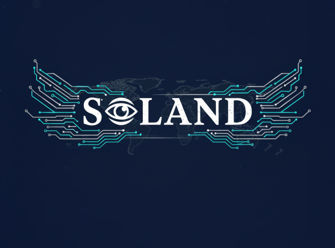

Independent journalism, deep analysis, and global fact-checking.
Soland - Observatoire indépendant des médias internationaux. Analyse et vérification.
Soland - Unabhängige internationale Medienbeobachtungsstelle. Analyse und Faktencheck.
Soland - Observatorio independiente de medios internacionales. Análisis y verificación.
Soland - 独立国际媒体观察站。新闻分析与事实核查。
Soland - Независимая международная обсерватория СМИ. Анализ и проверка фактов.
